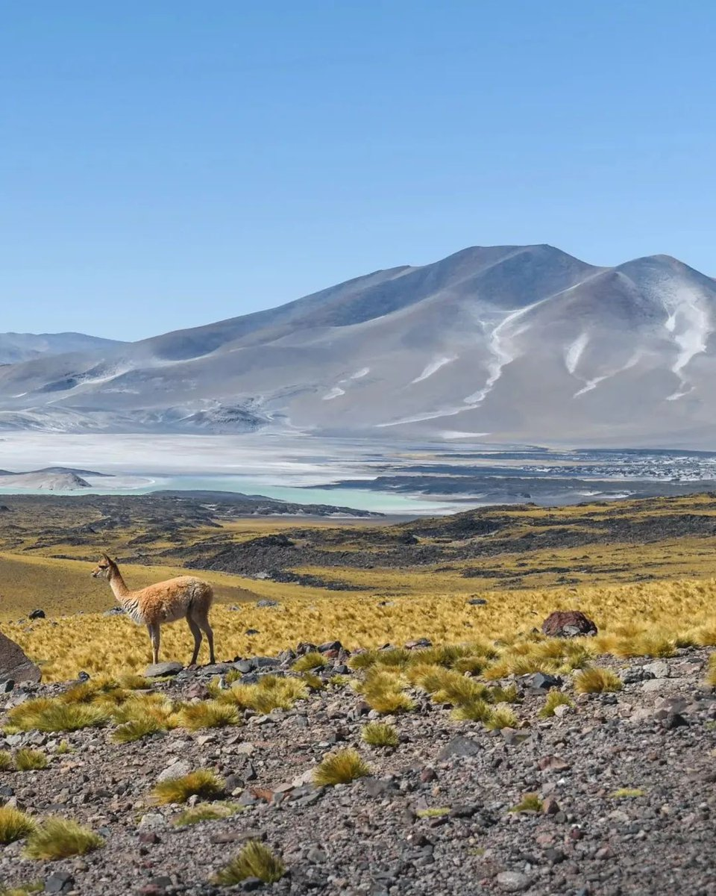

Ruta Nacional 40
La Ruta 40 atraviesa la Provincia de Catamarca de sur a norte pasando por Londres con las Ruinas del Shinkal de Quimivil, Belén y Hualfín. Llega al Valle de Yokavil en Santa María, con sus ruinas precolombinas que son Monumentos Históricos Nacionales.

Ruta de los Seismiles
El circuito de los Seismiles permite disfrutar de paisajes que se suceden en una cadena de contrastes extraordinarios: volcanes y planicies; valles verdes y quebradas rojizas; salares y tundras; desiertos, aguas termales y lagunas turquesas, escenarios únicos habitados por vicuñas, guanacos y flamencos rosados.
Ruta del Adobe
La Ruta del Adobe en Catamarca es un circuito de 50 km que avanza por la RN 60 entre las localidades de Tinogasta y Fiambalá. El recorrido enlaza antiguas construcciones puestas en valor que aparecen en las diferentes localidades que jalonan el circuito.